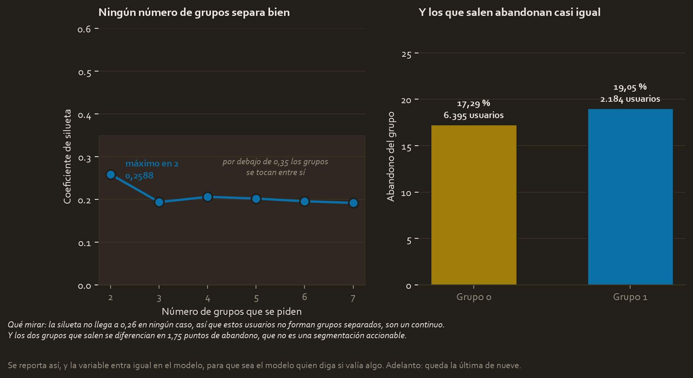
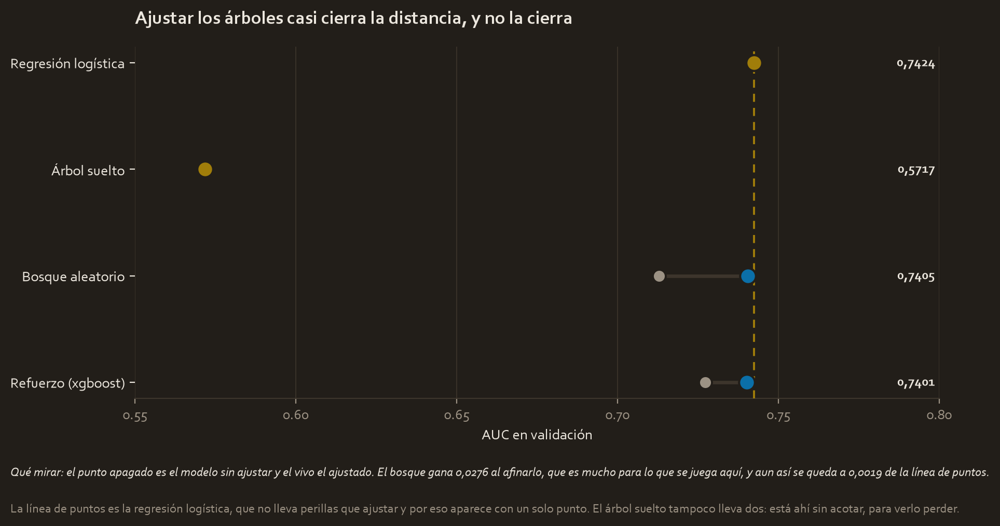
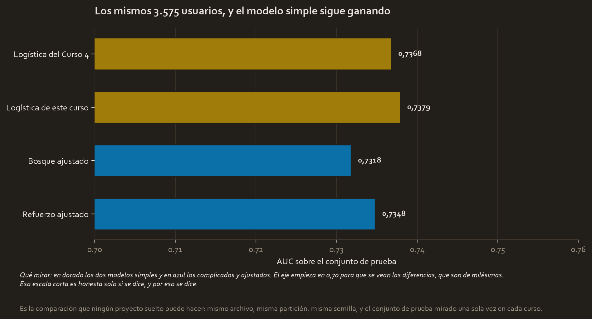
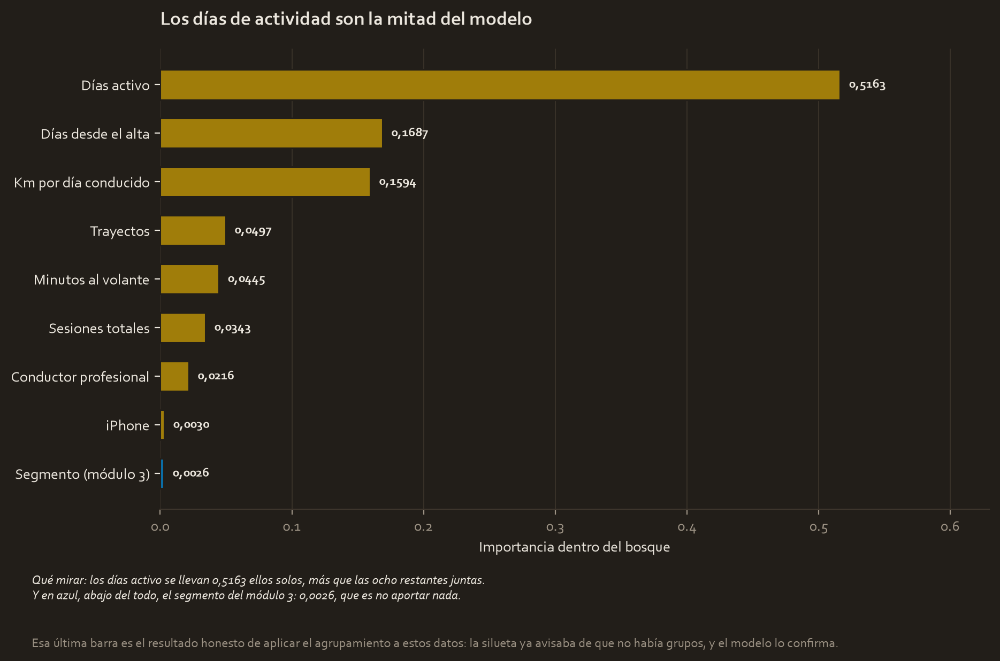
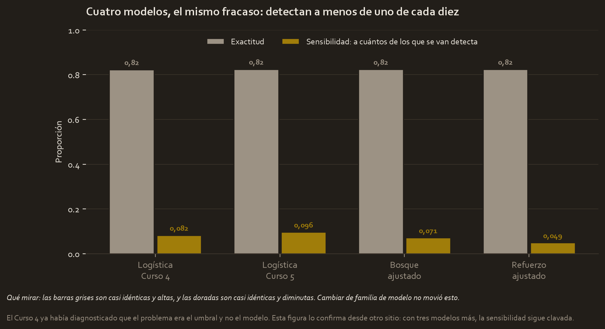

El encargo
Waze quiere saber quién está a punto de abandonar la aplicación para poder actuar antes. Es exactamente el mismo encargo del Curso 4, y esa repetición es lo que hace valioso este proyecto.
Porque el Curso 4 ya construyó un modelo para esto y dejó sus números escritos. Así que aquí se puede hacer algo que ningún proyecto suelto puede hacer: comparar de verdad.
La pregunta
¿Le gana un modelo de árbol a la regresión logística sobre este mismo problema?
Los datos
waze_dataset.csv, 14.999 usuarios. Los 700 sin etiqueta se excluyen igual que en el Curso 4 y por la misma comprobación, así que quedan 14.299, de los que abandona el 17,74 %.
Y la partición está montada para que la comparación sea exacta, no aproximada. El primer corte es el mismo 25 % con la misma semilla y la misma estratificación que el Curso 4:
| Parte | Usuarios | Abandono |
|---|---|---|
| Entrenamiento | 8.579 | 17,74 % |
| Validación | 2.145 | 17,72 % |
| Prueba | 3.575 | 17,73 % |
Esos 3.575 son literalmente los mismos usuarios que el Curso 4 apartó, y los 10.724 que aquel proyecto usó enteros para entrenar son los que aquí se reparten entre entrenamiento y validación. Cambiar una sola variable construida invalidaría todo esto, así que se construyen exactamente las mismas.
El control, fijado antes de mirar nada
El modelo del Curso 4, con sus cifras publicadas: AUC 0,7368 y sensibilidad 0,0820 sobre esos mismos 3.575 usuarios.
Y una expectativa escrita antes de ajustar nada, para que no se pueda ajustar después: los árboles probablemente no ganen. Una comparación sin ajustar ya lo sugería. Este proyecto los ajusta en serio para que la respuesta valga en las dos direcciones.
Lo que hubo que arreglar
Nada nuevo respecto al Curso 4, y eso es deliberado. Las 700 etiquetas ausentes, la división por cero de los kilómetros por día conducido y las variables construidas son idénticas.
Lo que sí es nuevo es la disciplina. El Curso 4 partía en dos; aquí se parte en tres y el conjunto de prueba no participa en ninguna decisión hasta el último paso. Entre medias se comparan cuatro familias y se prueban 88 combinaciones de perillas, todo contra validación.
Lo que mostró la exploración
El módulo 3 pedía agrupar a los usuarios sin etiquetas, y el resultado no es el halagador.

La mejor silueta es 0,2588, con dos grupos, y ningún otro número mejora. Por debajo de 0,35 los grupos se tocan entre sí: estos usuarios no forman familias separadas, son un continuo.
Los dos grupos que salen abandonan al 17,29 % y al 19,05 %, o sea 1,75 puntos de diferencia. Eso no es una segmentación accionable.
Se reporta así, y la variable entra igual en el modelo, para que sea el modelo quien diga si valía algo. Adelanto: queda la última de nueve.
El modelo, y por qué este modelo
Cuatro familias medidas en validación, y un árbol suelto incluido a propósito para verlo perder:
| Modelo | AUC en validación |
|---|---|
| Regresión logística | 0,7424 |
| Refuerzo (xgboost) | 0,7273 |
| Bosque aleatorio | 0,7129 |
| Árbol suelto | 0,5717 |
Ese 0,5717 del árbol suelto está a un paso de tirar una moneda, y por eso no se puede juzgar a un bosque por lo que hace un árbol. Las dos familias de árboles se ajustan con búsqueda en rejilla y validación cruzada de cuatro pliegues:

| Modelo | Sin ajustar | Ajustado | Lo que ganó | Tiempo |
|---|---|---|---|---|
| Bosque aleatorio | 0,7129 | 0,7405 | +0,0276 | 40 combinaciones, 61 s |
| Refuerzo (xgboost) | 0,7273 | 0,7401 | +0,0128 | 48 combinaciones, 13 s |
Ajustar el bosque le dio 0,0276 de AUC, que es una mejora grande para lo que se juega aquí. Y se quedó a 0,0019 de la logística, que no lleva ninguna perilla que ajustar.
El campeón se eligió en validación, antes de tocar la prueba, y fue la logística.
La comparación
Sobre los mismos 3.575 usuarios, mirando la prueba una sola vez:

| Modelo | AUC | Exactitud | Sensibilidad | Precisión |
|---|---|---|---|---|
| Logística del Curso 4 | 0,7368 | 0,8229 | 0,0820 | 0,5049 |
| Logística de este curso | 0,7379 | 0,8249 | 0,0962 | 0,5351 |
| Refuerzo ajustado | 0,7348 | 0,8246 | 0,0489 | 0,5636 |
| Bosque ajustado | 0,7318 | 0,8243 | 0,0710 | 0,5357 |
No. El modelo complicado no gana, ni en validación ni en prueba.
Y conviene decir lo que la comparación no demuestra: 0,7379 contra 0,7348 son tres milésimas sobre 3.575 usuarios, y eso no aguanta un cambio de semilla. Lo que sí aguanta es la conclusión cualitativa, que es que los árboles no despegan.
El resultado, traducido
Aparte del veredicto, dos cosas que el modelo dijo por su cuenta.

Los días de actividad son más de la mitad del modelo, con 0,5163, más que las otras ocho variables juntas. Y el segmento del módulo 3 queda el último de nueve, con 0,0026: la silueta ya avisaba de que no había grupos y el modelo lo confirma desde otro sitio.

Y el fallo que ningún modelo arregló: los cuatro detectan a menos de uno de cada diez de los que se van. El mejor es la logística de este curso con 0,0962 y el peor el refuerzo ajustado con 0,0489.
El Curso 4 ya había diagnosticado que eso era el umbral y no el modelo. Tener tres modelos más con la sensibilidad clavada lo confirma: no es una limitación del algoritmo, es dónde está puesto el corte.
Qué se decide con esto
- Desplegar la regresión logística, que gana y además se explica, se defiende ante quien la sufra y se arregla sin reentrenar trescientos árboles.
- Bajar el umbral, que es lo único que mueve la sensibilidad, aceptando más falsas alarmas. Cuánto se baja depende de lo que cueste contactar a un usuario que no se iba.
- No usar la segmentación para dirigir campañas. Los grupos no están separados y apenas difieren en abandono.
- Conservar el bosque como diagnóstico, no como modelo de producción: su tabla de importancia es la que dice dónde mirar.
Limitaciones
- Las diferencias son de milésimas. Con 3.575 usuarios de prueba, 0,7379 contra 0,7348 no es una diferencia que aguante un cambio de semilla.
- El archivo no dice por qué se fue nadie. Ningún modelo puede predecir bien una causa que no está en los datos, y ahí está el techo de este 0,74.
- La logística del Curso 4 se entrenó con 10.724 usuarios y esta con 8.579, porque aquí hay validación. Aun con menos datos salió ligeramente mejor, lo que confirma que la diferencia está dentro del ruido.
- La prueba se miró una sola vez, después de elegir campeón. Todo lo demás se decidió contra validación.
Material completo
Los tres se construyeron aquí. Los CSV se leen de tu carpeta del Curso 3 sin tocarlos, y el proyecto de Waze reparte los datos exactamente igual que el del Curso 4 para que la comparación entre los dos valga.
Informes y notas
- pace_plan.md 04_reports/pace_plan.md 4.0 KB
- executive_summary.md 04_reports/executive_summary.md 4.5 KB
- model_results.json 04_reports/model_results.json 3.1 KB
Código
- waze_trees.py 02_scripts/waze_trees.py 28.2 KB
- waze_curso5.ipynb waze_curso5.ipynb 16.2 KB